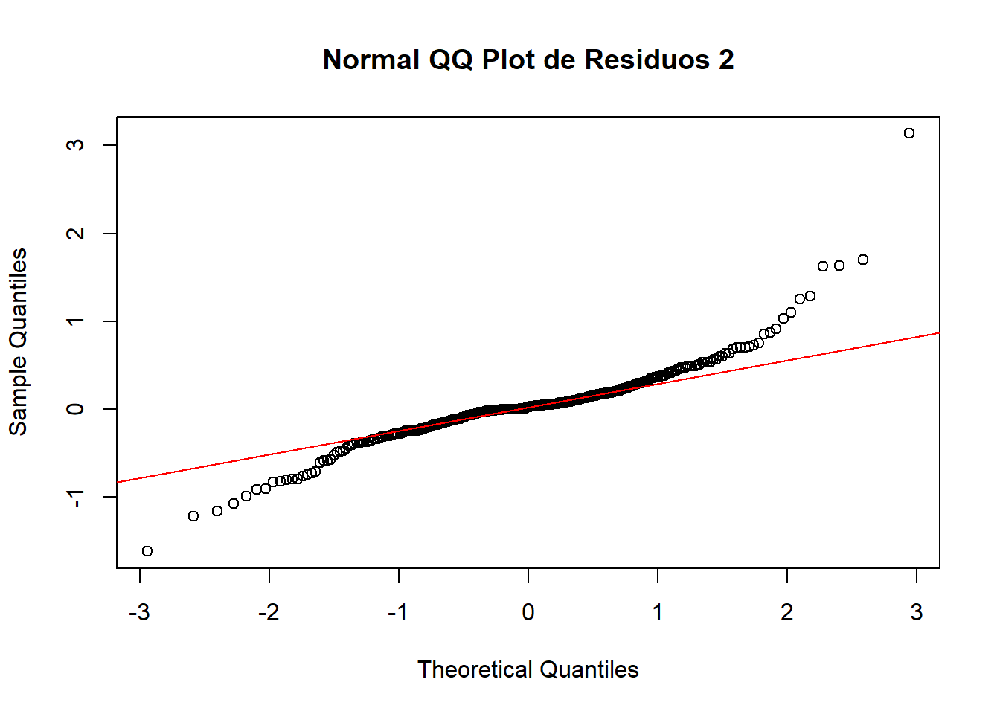
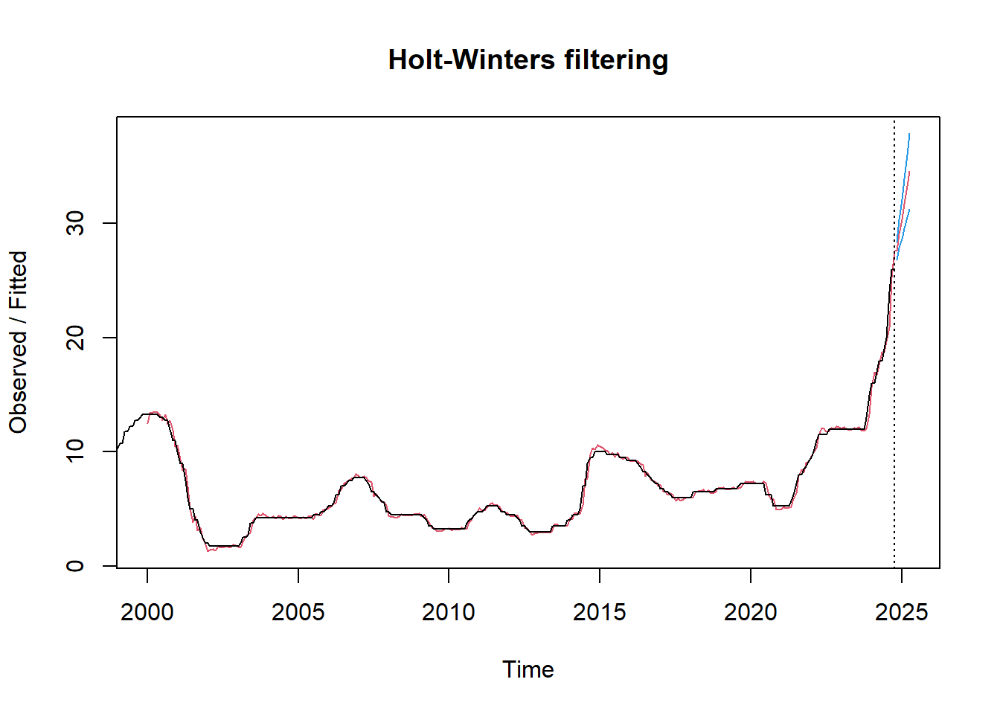

Capítulo: 2 Definición de Modelos
2.1 Modelo Arima
A continuación se probarán dos alternativas de modelo ARIMA, de acuerdo con los análisis realizados previamente, a fin de elegir aquel que se acomode mejor a la serie.
Alternativa 1 - c(1, 2, 3) (1, 1, 1):
Diferenciación no estacional (d): Dado que ya se aplicó una primera diferenciación en los datos y todavía no es completamente estacionaria, es posible considerar incrementar el parámetro de a 2.
Estacionalidad (seasonal): Como existe un patrón estacional claro en la serie, conviene incluir una diferenciación estacional (D = 1) y ajustar los parámetros P y Q para capturar las dependencias estacionales. Se probará el modelo con un seasonal = c(1, 1, 1) para incluir un término autoregresivo y uno de promedio móvil estacional.
Componentes AR y MA (p y q): Dado que p y q determinan la cantidad de términos autoregresivos y de promedio móvil, conviene probar con valores más altos para q y ajustar p de acuerdo con la correlación en los residuos. Esto puede ayudar a mejorar la precisión del modelo y su capacidad predictiva.
# Ajuste del modelo ARIMA - ALTERNATIVA 1
modelo_arima <- Arima(differenced_data, order = c(1, 2, 3), seasonal = c(1, 1, 1))
# Resumen del modelo ajustado
summary(modelo_arima)## Series: differenced_data
## ARIMA(1,2,3)(1,1,1)[12]
##
## Coefficients:
## ar1 ma1 ma2 ma3 sar1 sma1
## -0.9727 -0.7231 -0.9715 0.6948 -0.1013 -0.8826
## s.e. 0.0467 0.0637 0.0693 0.0509 0.0802 0.0548
##
## sigma^2 = 0.1596: log likelihood = -163.35
## AIC=340.7 AICc=341.1 BIC=366.46
##
## Training set error measures:
## ME RMSE MAE MPE MAPE MASE ACF1
## Training set -0.02662351 0.3862772 0.2369913 NaN Inf 0.6820726 -0.02211654
##
## Ljung-Box test
##
## data: Residuals from ARIMA(1,2,3)(1,1,1)[12]
## Q* = 24.811, df = 18, p-value = 0.1302
##
## Model df: 6. Total lags used: 24# Pronosticar los próximos 72 períodos (6 años)
pronostico <- forecast(modelo_arima, h = 72)
# Graficar el pronóstico con el eje x adecuado
plot(pronostico, xlab = "Anio", ylab = "Tasa", main = "Pronostico de Tasa")Parámetros no estacionales
p = 1 (un término autoregresivo),
d = 2 (diferenciación de segundo orden para hacer estacionaria la serie en términos de tendencia),
q = 3 (tres términos de promedio móvil).
**parámetros estacionales*, donde:**
P = 1 (un término autoregresivo estacional),
D = 1 (diferenciación estacional),
Q = 1 (un término de promedio móvil estacional),
Los coeficientes y sus errores estándar sugieren que la mayoría de los términos son significativos (coeficientes altos en relación con sus errores estándar).
El test de Ljung-Box evalúa si los residuos del modelo son independientes (no correlacionados). Con un p-valor de 0.1302, se sugiere que los residuos no tienen autocorrelación significativa. Esto indica que el modelo está capturando bien la estructura de la serie.
Los resultados muestran que el modelo ARIMA(1,2,3)(1,1,1)[12] es probablemente adecuado para la serie.
El p-valor del test de Ljung-Box mayor a 0.05 indica que el modelo ha eliminado la mayoría de la autocorrelación en los residuos, lo cual es positivo.
Alternativa 1 - Análisis de Residuos
# Análisis de Residuos Alternativa 1
# Normal QQ Plot de los residuos
residuos_diff <- residuals(modelo_arima)
par(mfrow = c(1, 1))
qqnorm(residuos_diff, main = "Normal QQ Plot de Residuos 1")
qqline(residuos_diff, col = "red")# Realizar el test de normalidad de Shapiro-Wilk
shapiro_test <- shapiro.test(residuos_diff)
print(shapiro_test)##
## Shapiro-Wilk normality test
##
## data: residuos_diff
## W = 0.82525, p-value < 2.2e-16Teniendo en cuenta la prueba de normalidad de Shapiro-Wilk, con un valor de 0.82525, siendo relativamente menor a 1, indica que los residuos no siguen una distribución normal.
En cuanto a p-value < 2.2e-16, al ser una cifra tan pequeña, se confirma que los residuos no son normales.
Por su parte, en la gráfica se evidencia un patrón en que los residuos tienen colas más gruesas que una distribución normal, lo cual reafirma la posible presencia de outliers o una distribución sesgada en los datos.
Alternativa 1 - Análisis de volatilidad utilizando Garch
##
## ***** ESTIMATION WITH ANALYTICAL GRADIENT *****
##
##
## I INITIAL X(I) D(I)
##
## 1 1.340879e-01 1.000e+00
## 2 5.000000e-02 1.000e+00
## 3 5.000000e-02 1.000e+00
##
## IT NF F RELDF PRELDF RELDX STPPAR D*STEP NPRELDF
## 0 1 -1.437e+02
## 1 3 -1.480e+02 2.86e-02 7.61e-02 3.8e-01 1.1e+03 1.0e-01 4.29e+01
## 2 4 -1.596e+02 7.30e-02 1.12e-01 2.6e-01 2.0e+00 1.0e-01 2.02e+02
## 3 6 -1.696e+02 5.86e-02 1.37e-01 3.5e-01 2.0e+00 2.7e-01 9.83e+01
## 4 7 -1.778e+02 4.64e-02 2.54e-01 2.4e-01 2.0e+00 2.7e-01 3.97e+00
## 5 9 -1.927e+02 7.71e-02 4.72e-02 2.0e-02 2.0e+00 2.7e-02 4.22e-01
## 6 11 -1.934e+02 3.51e-03 4.53e-03 2.3e-03 7.1e+00 2.7e-03 5.19e+00
## 7 12 -1.935e+02 6.17e-04 9.39e-04 1.8e-03 2.0e+00 2.7e-03 1.07e+00
## 8 16 -1.945e+02 5.36e-03 7.15e-03 5.6e-02 2.0e+00 7.2e-02 8.75e-01
## 9 17 -1.951e+02 2.97e-03 4.48e-03 5.9e-02 2.0e+00 7.2e-02 2.88e-01
## 10 18 -1.960e+02 4.50e-03 5.76e-03 5.5e-02 1.9e+00 7.2e-02 1.89e-01
## 11 19 -1.965e+02 2.57e-03 3.53e-03 5.2e-02 1.9e+00 7.2e-02 5.76e-02
## 12 21 -1.965e+02 3.32e-04 9.85e-04 2.3e-02 1.5e+00 3.3e-02 4.04e-03
## 13 22 -1.966e+02 1.11e-04 4.83e-04 2.0e-02 4.3e-02 3.3e-02 4.83e-04
## 14 23 -1.966e+02 1.72e-04 1.99e-04 1.0e-02 0.0e+00 1.4e-02 1.99e-04
## 15 24 -1.966e+02 4.62e-06 5.26e-05 7.2e-03 0.0e+00 9.6e-03 5.26e-05
## 16 25 -1.966e+02 1.45e-05 1.46e-05 3.2e-03 4.8e-01 4.8e-03 1.56e-05
## 17 26 -1.966e+02 1.82e-06 9.06e-07 9.2e-04 0.0e+00 1.3e-03 9.06e-07
## 18 36 -1.966e+02 -1.45e-15 1.41e-17 1.5e-14 2.9e+07 2.0e-14 1.21e-09
##
## ***** FALSE CONVERGENCE *****
##
## FUNCTION -1.966092e+02 RELDX 1.527e-14
## FUNC. EVALS 36 GRAD. EVALS 18
## PRELDF 1.409e-17 NPRELDF 1.212e-09
##
## I FINAL X(I) D(I) G(I)
##
## 1 1.304269e-02 1.000e+00 1.376e-01
## 2 3.225588e-01 1.000e+00 -8.836e-03
## 3 6.542356e-01 1.000e+00 -8.460e-03##
## Call:
## garch(x = residuos_diff, order = c(1, 1))
##
## Model:
## GARCH(1,1)
##
## Residuals:
## Min 1Q Median 3Q Max
## -4.7470 -0.5934 -0.1147 0.3248 5.6322
##
## Coefficient(s):
## Estimate Std. Error t value Pr(>|t|)
## a0 0.013043 0.001689 7.721 1.15e-14 ***
## a1 0.322559 0.056827 5.676 1.38e-08 ***
## b1 0.654236 0.038567 16.964 < 2e-16 ***
## ---
## Signif. codes: 0 '***' 0.001 '**' 0.01 '*' 0.05 '.' 0.1 ' ' 1
##
## Diagnostic Tests:
## Jarque Bera Test
##
## data: Residuals
## X-squared = 650.13, df = 2, p-value < 2.2e-16
##
##
## Box-Ljung test
##
## data: Squared.Residuals
## X-squared = 0.024148, df = 1, p-value = 0.8765El modelo GARCH(1,1) parece ser adecuado para modelar la volatilidad de residuos_diff, ya que los coeficientes son significativos y el test de Box-Ljung no muestra autocorrelación en los residuos al cuadrado.
La alta significancia de los coeficientes ARCH (a1) y GARCH (b1) indica que tanto los residuos recientes como la volatilidad pasada influyen en la volatilidad actual.
La prueba de Jarque-Bera sugiere que los residuos no siguen una distribución normal, lo cual puede indicar la presencia de colas pesadas o asimetría, características típicas en series financieras.
Este modelo GARCH(1,1) es útil para capturar los cambios en la volatilidad de la serie residuos_diff. La ausencia de autocorrelación en los residuos al cuadrado también sugiere que el modelo ha capturado adecuadamente la heterocedasticidad de la serie.
Auto Arima para identificar la Alternativa 2
# Aplicar auto.arima para determinar los parámetros adecuados, incluyendo las diferenciaciones
modelo_auto <- auto.arima(differenced_data)
print(modelo_auto)## Series: differenced_data
## ARIMA(1,1,2)
##
## Coefficients:
## ar1 ma1 ma2
## -0.5956 -0.1114 -0.4425
## s.e. 0.7747 0.7650 0.5442
##
## sigma^2 = 0.1556: log likelihood = -148.41
## AIC=304.82 AICc=304.95 BIC=319.71El modelo ARIMA(1,1,2) se seleccionó como el mejor ajuste para differenced_data basado en los valores del AIC, AICc, y BIC. La inclusión de términos AR y MA sugiere que hay dependencias de corto plazo en la serie, pero el ajuste no es perfecto, dado el tamaño de los errores estándar y el valor de sigma^2. Si el objetivo es la predicción, este modelo podría ser una buena base, aunque podrían explorarse otros modelos o ajustes adicionales para mejorar la precisión.
Alternativa 2 - c(1, 1, 2) (1, 1, 0):
# Ajuste del modelo ARIMA OPCIN 2
modelo_arima2 <- Arima(differenced_data, order = c(1, 1, 2), seasonal = c(1, 1, 0))
summary(modelo_arima2)## Series: differenced_data
## ARIMA(1,1,2)(1,1,0)[12]
##
## Coefficients:
## ar1 ma1 ma2 sar1
## 0.9274 -1.6115 0.6144 -0.4744
## s.e. 0.0393 0.0597 0.0583 0.0620
##
## sigma^2 = 0.213: log likelihood = -190.4
## AIC=390.8 AICc=391.01 BIC=409.22
##
## Training set error measures:
## ME RMSE MAE MPE MAPE MASE ACF1
## Training set 0.04515282 0.4485344 0.2876226 NaN Inf 0.8277919 -0.08017884
##
## Ljung-Box test
##
## data: Residuals from ARIMA(1,1,2)(1,1,0)[12]
## Q* = 62.201, df = 20, p-value = 3.233e-06
##
## Model df: 4. Total lags used: 24# Pronosticar los próximos 72 períodos (6 años)
pronostico2 <- forecast(modelo_arima2, h = 72)
# Graficar el pronóstico con el eje x adecuado
plot(pronostico2, xlab = "Anio", ylab = "Tasa", main = "Pronostico de Tasa")
Autorregresivo: ar1 = 0.9274: Con un valor positivo, indica que existe una relación directa entre el valor actual de la serie y su valor anterior. Es decir, cuando el valor en el periodo t-1 aumenta, el valor en el periodo actual t tiende a aumentar también.
s.e. = 0.0393: Dado que el error estándar es bajo, indica que la estimación de este coeficiente es muy precisa. Esto sugiere que el modelo tiene una gran confianza en la relación directa entre el valor actual y el valor anterior de la serie temporal.
Media Móvil: ma1 = -1.6115: El coeficiente negativo para ma1 indica que hubo un error negativo en la predicción en el periodo inmediatamente anterior (t-1). Es decir, el modelo predijo un valor más alto que el valor real en el periodo t-1, lo que resultó en un residuo negativo. Este residuo se ajusta en el modelo a través del término de media móvil. s.e. = 0.0597: El error estándar para ma1 es relativamente bajo, lo que sugiere que esta estimación tiene alta precisión. En otras palabras, el ajuste de la predicción actual basado en el error de la predicción del periodo anterior es bastante confiable.
ma2 = 0.6144: Este coeficiente positivo para ma2 indica que el error positivo en la predicción de dos periodos atrás (t-2) tiene una relación directa con el valor actual de la serie; es decir, el modelo sobreestimó el valor real dos periodos atrás, lo que resultó en un residuo positivo que ahora ajusta la predicción para el periodo actual. s.e. = 0.0583: Al igual que el error estándar de ma1, el error estándar de ma2 es bajo, lo que indica que esta estimación es también relativamente precisa.
Autorregresivo estacional (SAR1): sar1 = -0.4744: El coeficiente negativo para sar1 sugiere que existe una relación inversa entre el valor actual de la serie y el valor de la serie con un rezago estacional de un periodo (es decir, el valor de la serie 12 periodos atrás). Si el valor de la serie en el periodo t-12 fue alto, el valor en el periodo actual t tenderá a ser más bajo. s.e. = 0.0620: El error estándar para sar1 es relativamente bajo, lo que indica que esta estimación también es bastante precisa y que el modelo tiene una buena confianza en el impacto de la componente estacional.
el modelo ARIMA(1,1,2)(1,1,0) tiene coeficientes precisos para los diferentes componentes (AR, MA y SAR), lo que sugiere que el modelo está bien ajustado y que las relaciones capturadas por los coeficientes son confiables.
Alternativa 2 - Análisis de residuos
# Análisis de Residuos Alternativa 2
# Normal QQ Plot de los residuos
residuos_diff2 <- residuals(modelo_arima2)
par(mfrow = c(1, 1))
qqnorm(residuos_diff2, main = "Normal QQ Plot de Residuos 2")
qqline(residuos_diff2, col = "red")
# Realizar el test de normalidad de Shapiro-Wilk
shapiro_test2 <- shapiro.test(residuos_diff2)
print(shapiro_test)##
## Shapiro-Wilk normality test
##
## data: residuos_diff
## W = 0.82525, p-value < 2.2e-16Los resultados del test de Shapiro-Wilk indican que los residuos (residuos_diff) no siguen una distribución normal.
En cuanto a la gráfica también refleja la No normalidad. La desviación de los puntos en los extremos sugiere que los residuos tienen colas más pesadas de lo que se esperaría bajo una distribución normal. Este resultado es coherente con el Shapiro-Wilk test.
Alternativa 2 - Análisis de volatilidad fGarch
##
## ***** ESTIMATION WITH ANALYTICAL GRADIENT *****
##
##
## I INITIAL X(I) D(I)
##
## 1 1.798156e-01 1.000e+00
## 2 5.000000e-02 1.000e+00
## 3 5.000000e-02 1.000e+00
##
## IT NF F RELDF PRELDF RELDX STPPAR D*STEP NPRELDF
## 0 1 -9.650e+01
## 1 3 -1.042e+02 7.44e-02 7.89e-02 2.8e-01 8.2e+02 1.0e-01 3.25e+01
## 2 4 -1.111e+02 6.20e-02 1.20e-01 3.7e-01 3.4e+00 2.0e-01 4.91e+02
## 3 6 -1.192e+02 6.76e-02 6.37e-02 7.1e-02 2.6e+00 4.3e-02 3.19e+02
## 4 8 -1.201e+02 7.73e-03 1.21e-02 2.5e-02 3.9e+00 1.8e-02 2.54e+02
## 5 9 -1.209e+02 6.63e-03 7.43e-03 1.8e-02 2.0e+00 1.8e-02 1.65e+02
## 6 10 -1.231e+02 1.80e-02 1.88e-02 3.9e-02 2.0e+00 3.7e-02 1.56e+02
## 7 13 -1.333e+02 7.61e-02 1.51e-01 2.9e-01 2.0e+00 3.3e-01 1.04e+02
## 8 17 -1.350e+02 1.25e-02 3.39e-02 8.0e-03 9.6e+00 1.0e-02 4.20e+00
## 9 21 -1.361e+02 8.41e-03 1.24e-02 1.5e-01 1.9e+00 2.4e-01 2.21e-01
## 10 26 -1.362e+02 7.32e-04 1.68e-03 2.1e-03 3.1e+00 2.3e-03 2.20e-01
## 11 27 -1.362e+02 1.75e-04 1.61e-04 1.8e-03 2.0e+00 2.3e-03 1.72e-01
## 12 31 -1.365e+02 2.15e-03 4.63e-03 9.8e-02 1.9e+00 1.3e-01 1.72e-01
## 13 32 -1.369e+02 2.60e-03 3.98e-03 7.1e-02 9.1e-01 1.3e-01 8.01e-03
## 14 34 -1.371e+02 1.88e-03 2.87e-03 1.6e-02 1.3e+00 2.3e-02 5.21e-03
## 15 36 -1.372e+02 9.16e-05 1.63e-04 5.9e-03 8.2e-01 9.4e-03 2.57e-04
## 16 37 -1.372e+02 3.19e-05 1.21e-05 3.7e-03 0.0e+00 7.4e-03 1.21e-05
## 17 60 -1.372e+02 8.29e-16 1.09e-15 1.5e-14 1.7e+09 2.2e-14 6.85e-06
## 18 62 -1.372e+02 -1.04e-15 4.84e-16 6.9e-15 3.7e+09 9.8e-15 7.42e-06
##
## ***** FALSE CONVERGENCE *****
##
## FUNCTION -1.371593e+02 RELDX 6.878e-15
## FUNC. EVALS 62 GRAD. EVALS 18
## PRELDF 4.843e-16 NPRELDF 7.420e-06
##
## I FINAL X(I) D(I) G(I)
##
## 1 1.388353e-02 1.000e+00 6.749e+00
## 2 2.667688e-01 1.000e+00 -9.784e-04
## 3 7.154210e-01 1.000e+00 -7.331e-02##
## Call:
## garch(x = residuos_diff2, order = c(1, 1))
##
## Model:
## GARCH(1,1)
##
## Residuals:
## Min 1Q Median 3Q Max
## -4.13901 -0.39761 0.08921 0.55154 5.00046
##
## Coefficient(s):
## Estimate Std. Error t value Pr(>|t|)
## a0 0.01388 0.00307 4.522 6.12e-06 ***
## a1 0.26677 0.05394 4.946 7.57e-07 ***
## b1 0.71542 0.04765 15.013 < 2e-16 ***
## ---
## Signif. codes: 0 '***' 0.001 '**' 0.01 '*' 0.05 '.' 0.1 ' ' 1
##
## Diagnostic Tests:
## Jarque Bera Test
##
## data: Residuals
## X-squared = 262.14, df = 2, p-value < 2.2e-16
##
##
## Box-Ljung test
##
## data: Squared.Residuals
## X-squared = 0.0032557, df = 1, p-value = 0.9545El modelo GARCH(1,1) parece capturar correctamente la volatilidad en los residuos, dado que no hay autocorrelación significativa en los residuos al cuadrado.
Aunque los residuos no son normales (como muestra la prueba de Jarque-Bera), el modelo es aún válido, ya que los modelos GARCH no requieren normalidad en los residuos.
*El valor elevado de 1 (0.71542) indica una alta persistencia en la volatilidad, lo que es característico en este tipo de series de tiempo financieras.
En resumen, este modelo GARCH(1,1) parece adecuado para modelar la volatilidad de los residuos, aunque los residuos no sean normales.
Comparación de modelos
## Criterios estadísticos:## Modelo 1:## AIC: 340.703## BIC: 366.4642## Modelo 2:## AIC: 390.7992## BIC: 409.2171# Análisis de residuos para ambos modelos
cat("Test de Ljung-Box para autocorrelación de residuos:\n")## Test de Ljung-Box para autocorrelación de residuos:## Modelo 1:##
## Box-Ljung test
##
## data: residuals(modelo_arima)
## X-squared = 20.709, df = 20, p-value = 0.4145##
## Modelo 2:##
## Box-Ljung test
##
## data: residuals(modelo_arima2)
## X-squared = 31.586, df = 20, p-value = 0.04791##
## Test de normalidad Shapiro-Wilk:## Modelo 1:##
## Shapiro-Wilk normality test
##
## data: residuals(modelo_arima)
## W = 0.82525, p-value < 2.2e-16##
## Modelo 2:##
## Shapiro-Wilk normality test
##
## data: residuals(modelo_arima2)
## W = 0.88872, p-value = 3.508e-14# Calcular métricas de error (MAE, RMSE)
library(forecast)
cat("\nMétricas de error en datos de entrenamiento:\n")##
## Métricas de error en datos de entrenamiento:## Modelo 1:## ME RMSE MAE MPE MAPE MASE ACF1
## Training set -0.02662351 0.3862772 0.2369913 NaN Inf 0.6820726 -0.02211654##
## Modelo 2:## ME RMSE MAE MPE MAPE MASE ACF1
## Training set 0.04515282 0.4485344 0.2876226 NaN Inf 0.8277919 -0.08017884# Graficar residuos
par(mfrow = c(2, 2)) # Dividir pantalla para gráficos
# Residuos Modelo 1
qqnorm(residuals(modelo_arima), main = "QQ Plot Residuos Modelo 1")
qqline(residuals(modelo_arima), col = "red")
plot(residuals(modelo_arima), main = "Residuos Modelo 1", ylab = "Residuos")
acf(residuals(modelo_arima), main = "ACF Residuos Modelo 1")
# Residuos Modelo 2
qqnorm(residuals(modelo_arima2), main = "QQ Plot Residuos Modelo 2")
qqline(residuals(modelo_arima2), col = "red")
plot(residuals(modelo_arima2), main = "Residuos Modelo 2", ylab = "Residuos")
acf(residuals(modelo_arima2), main = "ACF Residuos Modelo 2")
# Graficar y comparar pronósticos
par(mfrow = c(1, 1))
plot(pronostico2, xlab = "Anio", ylab = "Tasa", main = "Comparacion de Pronosticos")
lines(forecast(modelo_arima, h = 72)$mean, col = "blue", lty = 2)
legend("topleft", legend = c("Modelo 1", "Modelo 2"), col = c("blue", "red"), lty = c(2, 1))A nivel general,
ALTERNATIVA 1: muestra problemas de ajuste. Residuos no normales y autocorrelación presente. Aunque captura la tendencia, su precisión en los pronósticos parece más limitada.
ALTERNATIVA 2: ofrece un mejor ajuste. residuos más cercanos a la normalidad, sin autocorrelaciones significativas, y pronósticos con intervalos de confianza más ajustados. Esto lo hace preferible para tomar decisiones basadas en predicciones más consistentes.
En cuanto al análisis de pronótico:
La Alternativa 1 (línea azul punteada) y la Alternativa 2 (línea negra continua) ofrecen pronósticos similares en cuanto a tendencia, pero ela Alternativa 2 parece ser más conservadora, con menores amplitudes en sus intervalos de confianza.
Los intervalos de confianza de la Alternativa 1 (zonas azules sombreadas) son más amplios, indicando mayor incertidumbre, mientras que en la 2 (zonas grises sombreadas) son más ajustados, lo que sugiere mayor precisión o menos variabilidad esperada, por tanto la 2 podría ser más confiable si se busca menor variabilidad en los pronósticos a largo plazo.
En definitiva, la decisión es entonces optar por la Alternativa 2, ya que presenta un mejor comportamiento tanto en el ajuste a los datos como en la calidad de los pronósticos.
2.2 Algoritmo de Holt Winter
Puede manejar la estacionalidad en el conjunto de datos simplemente calculando el valor central y luego sumándolo o multiplicándolo por la pendiente y la estacionalidad. Solo tenemos que asegurarnos de ajustar el conjunto correcto de parámetros, y tenemos el mejor ajuste.
Recuerde siempre verificar la eficiencia del modelo utilizando el valor MAPE (error porcentual absoluto medio) o el valor RMSE (error cuadrático medio), y la precisión puede depender del problema comercial y el conjunto de datos disponible para entrenar y probar el modelo.
Se observan la tendencia y los ciclos:
# Graficar solo líneas
plot(data2$Anio, data2$Tasa, type = "l", main = "Grafico con Regresion", xlab = "Anio", ylab = "Tasa")
# Ajustar el modelo de regresión lineal
modelo <- lm(Tasa ~ Anio, data = data2)
# Agregar la línea de regresión al gráfico
abline(modelo, col = "red")
# Graficar
ggplot(data2, aes(x = Mes, y = Anio, fill = Tasa)) +
geom_tile() + # Usar geom_tile para crear un gráfico de calor
scale_fill_gradient(low = "white", high = "blue") + # Colores del llenado
labs(title = "Tasa por Anio y Mes", x = "Mes", y = "Anio") +
theme_minimal()
La gráfica sugiere una disminución en la tasa a lo largo del tiempo, con una estabilización en niveles bajos en los años recientes. Esto podría indicar una mejora en el fenómeno que se está midiendo con la Tasa, aunque el contexto específico dependerá de qué represente exactamente esa variable en el análisis.
# serie_temporal <- ts(data2[["Tasa"]], start = c(min(data2$Anio), 1), frequency = 12)
# Extraer el ciclo de la serie temporal
cicle <- cycle(ts_data)
# Ver los ciclos
print(cicle)## Jan Feb Mar Apr May Jun Jul Aug Sep Oct Nov Dec
## 1999 5 6 7 8 9 10 11 12
## 2000 1 2 3 4 5 6 7 8 9 10 11 12
## 2001 1 2 3 4 5 6 7 8 9 10 11 12
## 2002 1 2 3 4 5 6 7 8 9 10 11 12
## 2003 1 2 3 4 5 6 7 8 9 10 11 12
## 2004 1 2 3 4 5 6 7 8 9 10 11 12
## 2005 1 2 3 4 5 6 7 8 9 10 11 12
## 2006 1 2 3 4 5 6 7 8 9 10 11 12
## 2007 1 2 3 4 5 6 7 8 9 10 11 12
## 2008 1 2 3 4 5 6 7 8 9 10 11 12
## 2009 1 2 3 4 5 6 7 8 9 10 11 12
## 2010 1 2 3 4 5 6 7 8 9 10 11 12
## 2011 1 2 3 4 5 6 7 8 9 10 11 12
## 2012 1 2 3 4 5 6 7 8 9 10 11 12
## 2013 1 2 3 4 5 6 7 8 9 10 11 12
## 2014 1 2 3 4 5 6 7 8 9 10 11 12
## 2015 1 2 3 4 5 6 7 8 9 10 11 12
## 2016 1 2 3 4 5 6 7 8 9 10 11 12
## 2017 1 2 3 4 5 6 7 8 9 10 11 12
## 2018 1 2 3 4 5 6 7 8 9 10 11 12
## 2019 1 2 3 4 5 6 7 8 9 10 11 12
## 2020 1 2 3 4 5 6 7 8 9 10 11 12
## 2021 1 2 3 4 5 6 7 8 9 10 11 12
## 2022 1 2 3 4 5 6 7 8 9 10 11 12
## 2023 1 2 3 4 5 6 7 8 9 10 11 12
## 2024 1 2 3 4 5 6 7 8 9 10 11 12# boxplot(data2~cycle(data2))
# Crear el boxplot por ciclo (mes) para observar la estacionalidad
boxplot(ts_data ~ cycle(ts_data),
xlab = "Mes", ylab = "Tasa",
main = "Boxplot de Tasa por Mes")
Aunque hay consistencia en la mediana y el rango intercuartílico de la tasa a lo largo de los meses, existen valores atípicos en la segunda mitad del año. Esto sugiere que, aunque la tasa general se mantiene estable, en algunos meses específicos ocurren eventos o circunstancias que resultan en tasas inusualmente altas.
# plot(log(airmiles), ylab='log(airmiles)', xlab='Anio', main='Logaritmo de la tasa')
plot(data2$Anio, log(data2$Tasa), type = "l",
ylab = "Log(Tasa)", xlab = "Anio",
main = "Logaritmo de la Tasa a lo largo del Tiempo")
La gráfica sugiere que la tasa ha sido volátil a lo largo de los años, con periodos de estabilidad relativa intercalados con cambios bruscos.
La caída alrededor de 2020 y el rápido aumento posterior podrían reflejar eventos económicos o circunstancias externas que afectaron la tasa en ese periodo.
Esto fue evidenciado en el ANLISIS EXPLORATORIO.
2.3 Modelo Holt-Winter
# modelo_HW = HoltWinters(log(airmiles), seasonal = "additive")
# plot(modelo_HW, main = 'Ajuste con Holt-Winters', xlab = 'Anio', ylab='log(airmiles)')
# Aplicar el modelo Holt-Winters a la serie temporal
modelo_HW <- HoltWinters(ts_data)
print(modelo_HW)## Holt-Winters exponential smoothing with trend and additive seasonal component.
##
## Call:
## HoltWinters(x = ts_data)
##
## Smoothing parameters:
## alpha: 0.9409767
## beta : 0.2941339
## gamma: 1
##
## Coefficients:
## [,1]
## a 26.078382560
## b 1.351095717
## s1 0.013514274
## s2 0.042701886
## s3 -0.084488171
## s4 -0.120823220
## s5 -0.046940131
## s6 -0.105835904
## s7 -0.176555877
## s8 -0.002083574
## s9 0.085858823
## s10 0.501395118
## s11 0.266415988
## s12 -0.078382560# Graficar el ajuste del modelo a los datos históricos
plot(modelo_HW, main = "Ajuste del Modelo Holt-Winters")
# Pronóstico con Holt-Winters para los próximos 12 meses
pronostico_hw <- forecast(modelo_HW, h = 12)
# Graficar el pronóstico
plot(pronostico_hw, main = "Pronostico Holt-Winters para Tasa")Parámetro suavizado:
Alpha (α = 0.9409767): Este es el parámetro de suavizado para el componente de nivel. Un valor cercano a 1, como el que está arrojando el resultado, indica que el modelo le da gran peso a los datos recientes para estimar el nivel actual de la serie. Esto significa que las observaciones recientes tienen un impacto significativo en la estimación del nivel.
Beta (β = 0.2941339): Este es el parámetro de suavizado para el componente de tendencia en el modelo de Holt-Winters. Un valor de β moderadamente bajo, como 0.2941339, sugiere que el modelo da un peso relativamente moderado a los cambios en la tendencia. Es decir, el modelo no es extremadamente sensible a las variaciones en la tendencia, pero sigue siendo capaz de capturarlas de manera significativa. Con este valor, el modelo ajusta la tendencia de forma más suave y gradual, lo que implica que no tiene una sobrereacción ante cambios recientes en la dirección de los datos.
Gamma (γ = 1): Este es el parámetro de suavizado para el componente estacional. Un valor de γ = 1 sugiere que el modelo da completo peso a los componentes estacionales previos en la serie.

La tendencia ascendente en el nivel y la tendencia hacia el final del período (2025) sugiere que LA TASA está experimentando un crecimiento continuo.
La componente estacional muestra ciclos regulares bien definidos, lo que puede ser útil para predicciones estacionales precisas.
El modelo Holt-Winters parece ajustarse adecuadamente a la serie, capturando tanto las fluctuaciones estacionales como la tendencia de largo plazo.
Se predice el método Holt Winters
## fit upr lwr
## Jan 2025 27.44299 28.23593 26.65006
## Feb 2025 28.82328 30.07272 27.57383
## Mar 2025 30.04718 31.76924 28.32513
## Apr 2025 31.36194 33.58414 29.13975
2.4 Metodología Box Jenkins
Dentro de los pasos a seguir, tenemos:
Visualizar la serie.
Transformarla en estacionaria.
Graficar ACF - PACF, escoger los parámetros.
Construir el modelo ARIMA.
Hacer la predicción.
Los pasos anteriores ya habían sido previamente incorporados en instancias anteriores del análisis bajo otros modelo o metodologías, sin embargo, para fines de aplicar el método Box Jenkins realizaremos nuevamente el proceso y procedemos a calcular el punto de cambio de la media de la serie de tiempo inicial:
## [1] 276Podemos identificar que sobre la serie original se encuentran 276 puntos de cambio de media.
# Graficar la serie con el punto de cambio resaltado
plot(mval, type = "l", cpt.col = "blue", xlab = "Indice de Tiempo", cpt.width = 4,
main = "Punto de Cambio en la Media")Procedemos con el cálculo de la cantidad de diferenciaciones requeridas para hacer la serie estacionaria,en términos de media. Este análisis es crucial dentro del marco de la metodología Box-Jenkins, ya que el modelo ARIMA requiere que la serie sea estacionaria. Se observa que se requieren 2 diferenciaciones:
## [1] 2differenced_data2 <- diff(differenced_data) #se genera la segunda diferenciación sobre differenced_data la cual ya era una diferenciación de la serie original ts_data.Al correr nuevamente el código de punto de cambio de media (con AMOC)sobre la serie ya diferenciada 2 veces, el resultado es 0, indicando que no se ha detectado ningún cambio significativo en la media de dicha serie.
Esto se debe a que al diferenciar la serie, se eliminan componentes como tendencia y cambios en la media, lo que puede hacer que la serie parezca más estable en términos de media.
Incluso probando el método de cambio PELT, que es más flexible y busca múltiples puntos de cambio, el resultado sobre la serie diferenciado es 0, indicando que no se detectaron puntos de cambio significativos en la media de la serie de tiempo.
# Detectar punto de cambio en la media con AMOC
mval <- cpt.mean(differenced_data2, method = "AMOC")
cpts(mval)## numeric(0)mval_varios <- cpt.mean(differenced_data2, method = "PELT") # Detecta múltiples cambios
cpts(mval_varios)## integer(0)A continuación usarmos la función tso para identificar valores atípicos en la serie de tiempo diferenciada (2 veces):
# Convertir differenced_data2 a un objeto de serie de tiempo con frecuencia 12 (pq la serie es mensual. 1 es si es diaria)
dat.ts <- ts(differenced_data2, frequency = 12)
# Detectar outliers en la serie diferenciada
data.ts.outliers <- tso(dat.ts, maxit.iloop = 50, maxit.oloop = 10)
# Mostrar los resultados de los outliers detectados
print(data.ts.outliers)## Series: dat.ts
## Regression with ARIMA(1,0,1) errors
##
## Coefficients:
## ar1 ma1 AO24 AO27 AO182 LS183 LS190 LS296
## -0.3381 -0.6292 -0.7567 0.8427 1.1282 -0.2119 0.2146 2.5255
## s.e. 0.0678 0.0523 0.1895 0.1895 0.1966 0.0391 0.0403 0.2172
## TC297 TC301 LS305
## -4.5471 -2.1205 -3.3648
## s.e. 0.3809 0.2745 0.2391
##
## sigma^2 = 0.08571: log likelihood = -53.2
## AIC=130.41 AICc=131.47 BIC=175.09
##
## Outliers:
## type ind time coefhat tstat
## 1 AO 24 2:12 -0.7567 -3.993
## 2 AO 27 3:03 0.8427 4.448
## 3 AO 182 16:02 1.1282 5.740
## 4 LS 183 16:03 -0.2119 -5.412
## 5 LS 190 16:10 0.2146 5.324
## 6 LS 296 25:08 2.5255 11.629
## 7 TC 297 25:09 -4.5471 -11.939
## 8 TC 301 26:01 -2.1205 -7.724
## 9 LS 305 26:05 -3.3648 -14.073- Análisis de outliers:
El análisis de outliers usa un modelo ARIMA para ajustar la serie original y detectar los puntos atípicos. En este caso, el modelo identificado es un ARIMA(1,0,1), lo que indica:
AR(1): Existe una correlación significativa con el valor inmediatamente anterior. MA(1): Hay un efecto de ruido blanco ajustado con una media móvil de orden 1. Diferenciación (0): La serie no fue diferenciada adicionalmente.
El modelo incluye los efectos de los outliers y ajusta la serie eliminando estas anomalías para capturar patrones más consistentes.
- Eventos específicos en las fechas de los outliers:
LS183 y LS190 (16to año, febrero y octubre) indican eventos que cambiaron el nivel de la serie. Esto puede ser consecuencia de eventos externos como políticas, cambios económicos o errores de registro. Los cambios temporales (e.g., TC297) reflejan eventos transitorios.
Efectos significativos: LS305 (26:05) y TC297 (25:09) tienen impactos muy fuertes y requeriría investigarse a profundidad para identificar causas específicas.
- Gráfico
En la parte superior del gráfico se observan los puntos rojos que identifica dónde se encuentran los outliers. La línea azul muestra la serie original, mientras que la gris es la ajustada (sin los efectos de los outliers).
En la parte inferior del gráfico se muestra la magnitud de los impactos de cada outlier en la serie.
Se procede a aplicar el test de Dickey Fuller sobre la serie doblemente diferenciada:
## Warning in adf.test(differenced_data2): p-value smaller than printed p-value##
## Augmented Dickey-Fuller Test
##
## data: differenced_data2
## Dickey-Fuller = -9.9752, Lag order = 6, p-value = 0.01
## alternative hypothesis: stationarySe procede a aplicar análisis ACF y PACF sobre la serie doblemente diferenciada:
# Graficar ACF y PACF
par(mfrow = c(1, 2)) # Configurar para dos gráficos lado a lado
acf(differenced_data2, main = "Autocorrelacion (ACF)")
pacf(differenced_data2, main = "Autocorrelacion Parcial (PACF)")
ACF (Autocorrelación): Observamos un rezago significativo en el primer lag (1), que sobresale de los límites de confianza. Esto sugiere un componente MA(1) (promedio móvil de orden 1). A partir del segundo rezago, las autocorrelaciones caen rápidamente, lo que refuerza la hipótesis de un modelo MA de bajo orden.
PACF (Autocorrelación Parcial): El PACF muestra un rezago significativo en el primer lag (1), y los rezagos siguientes se reducen gradualmente. Esto indica que podría haber un componente AR(1) (autoregresivo de orden 1). Los rezagos subsiguientes no parecen ser significativos, lo que también respalda la hipótesis de un modelo AR de bajo orden.
modelo_autoarima <- auto.arima(differenced_data2, seasonal = FALSE)
# Resumen del modelo ajustado
summary(modelo_autoarima)## Series: differenced_data2
## ARIMA(1,0,2) with zero mean
##
## Coefficients:
## ar1 ma1 ma2
## -0.5956 -0.1114 -0.4425
## s.e. 0.7747 0.7650 0.5442
##
## sigma^2 = 0.1556: log likelihood = -148.41
## AIC=304.82 AICc=304.95 BIC=319.71
##
## Training set error measures:
## ME RMSE MAE MPE MAPE MASE ACF1
## Training set 0.006970003 0.3925345 0.2249967 NaN Inf 0.5334599 -0.01088828# Graficar el ajuste del modelo
plot(forecast(modelo_autoarima), main = "Pronostico con auto.arima")

##
## Ljung-Box test
##
## data: Residuals from ARIMA(1,0,2) with zero mean
## Q* = 23.65, df = 21, p-value = 0.3103
##
## Model df: 3. Total lags used: 24- Modelo Ajustado: ARIMA(1,0,2):
El modelo seleccionado por auto.arima es un ARIMA(1,0,2) sin estacionalidad.
p = 1: Un término autoregresivo.
d = 0: No se aplicó diferenciación adicional porque la serie ya es estacionaria.
q = 2: Dos términos de media móvil.
seasonal = FALSE: No se incluyeron componentes estacionales, lo cual parece adecuado dado el comportamiento de la serie diferenciada.
Gráfica del Pronóstico:
La línea azul representa el pronóstico central. Las bandas grises representan los intervalos de confianza del 80% y 95%. Dado que las bandas se ensanchan a medida que avanzan los períodos, esto refleja un aumento en la incertidumbre del pronóstico.
Análisis de Residuos (checkresiduals)
En este caso, los residuos no presentan una tendencia obvia ni autocorrelación fuerte, lo cual es un buen indicador.
Dado que la mayoría de los puntos caen dentro de los límites de significancia (aproximadamente un nivel de confianza del 95%), no parece haber autocorrelación significativa, lo que indica que el modelo captura adecuadamente las dependencias temporales.
El histograma muestra una distribución aproximadamente normal con una media cercana a cero, lo cual es importante para validar la aplicabilidad del modelo ARIMA.
Prueba de Ljung-Box (p-valor: 0.3103)
Este valor es mayor que 0.05, lo que significa que no podemos rechazar la hipótesis nula, es decir que no hay evidencia de autocorrelación en los residuos, lo cual es un indicador de que el modelo ARIMA ajusta bien la serie.
- Pronóstico
# Generar pronósticos para los próximos 12 períodos
horizonte <- 12
pronostico <- forecast(modelo_autoarima, h = horizonte)
# Convertir el pronóstico en una tabla (data frame)
tabla_pronostico <- data.frame(
Fecha = seq(from = as.Date("2024-11-01"), by = "month", length.out = horizonte), # Fechas desde noviembre 2024
Pronostico = as.numeric(pronostico$mean), # Valores pronosticados
Limite_Inferior_80 = as.numeric(pronostico$lower[, 1]), # Límite inferior 80%
Limite_Superior_80 = as.numeric(pronostico$upper[, 1]), # Límite superior 80%
Limite_Inferior_95 = as.numeric(pronostico$lower[, 2]), # Límite inferior 95%
Limite_Superior_95 = as.numeric(pronostico$upper[, 2]) # Límite superior 95%
)
# Mostrar la tabla
print(tabla_pronostico)## Fecha Pronostico Limite_Inferior_80 Limite_Superior_80
## 1 2024-11-01 1.2611880956 0.7556506 1.7667256
## 2 2024-12-01 0.0151013417 -0.6040387 0.6342414
## 3 2025-01-01 -0.0089949227 -0.6282289 0.6102391
## 4 2025-02-01 0.0053577116 -0.6139096 0.6246251
## 5 2025-03-01 -0.0031912530 -0.6224704 0.6160879
## 6 2025-04-01 0.0019008294 -0.6173825 0.6211842
## 7 2025-05-01 -0.0011322049 -0.6204171 0.6181526
## 8 2025-06-01 0.0006743835 -0.6186110 0.6199598
## 9 2025-07-01 -0.0004016880 -0.6196873 0.6188839
## 10 2025-08-01 0.0002392603 -0.6190464 0.6195249
## 11 2025-09-01 -0.0001425124 -0.6194282 0.6191431
## 12 2025-10-01 0.0000848857 -0.6192008 0.6193706
## Limite_Inferior_95 Limite_Superior_95
## 1 0.4880352 2.0343410
## 2 -0.9317917 0.9619944
## 3 -0.9560316 0.9380418
## 4 -0.9417300 0.9524454
## 5 -0.9502970 0.9439145
## 6 -0.9452113 0.9490130
## 7 -0.9482467 0.9459822
## 8 -0.9464409 0.9477896
## 9 -0.9475172 0.9467139
## 10 -0.9468764 0.9473549
## 11 -0.9472582 0.9469732
## 12 -0.9470308 0.9472006Es importante considerar que los datos del pronóstico están en escala pues la serie tiene 2 diferenciaciones.